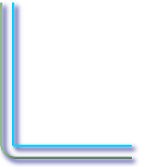
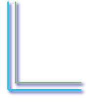
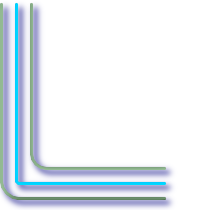
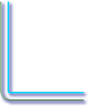

名前
ST_OffsetCurve — 与えられた距離と方面に入力ラインをずらしたラインを返します。中心線と平行する線を引く際に使えます。
概要
geometry ST_OffsetCurve(geometry line, float signed_distance, text style_parameters='');
説明
与えられた距離と方面に入力ラインをずらしたラインを返します。返されるジオメトリの全てのポイントは、入力ジオメトリより与えられた距離以上には離れません。
距離が正の場合には、入力ラインの左側にずらして、方向が保持されます。負の場合には、右側にずらし、逆方向のラインになります。
Availability: 2.0 - GEOS 3.2以上、GEOS 3.3以上で改善されました。
任意指定の第3引数では、空白区切りのkey=valueペアの一覧を指定して、次のような操作をすることができます。
'quad_segs=#' : 4分の1円区分数に近づけるために使われる区分の数 (デフォルトは8)。
'join=round|mitre|bevel' : 接続スタイル (デフォルトは"round")。'miter'も'mitre'の同義語として受け付けます。
'mitre_limit=#.#' : マイターの割合制限 (接続スタイルがマイターである場合のみ影響が出ます)。'miter_limit'も'mitre_limit'の同義語として受け付けます。
距離の単位は空間参照系の単位です。
入力はLINESTRINGのみ可能です。
GEOSモジュールで実現しています。
![[注記]](images/note.png) | |
この関数は第3次元 (Z)を無視し、3次元ジオメトリが与えられたとしても、常に2次元の結果を返します。 |
例
道路の周りの開いたバッファの算出
SELECT ST_Union(
ST_OffsetCurve(f.the_geom, f.width/2, 'quad_segs=4 join=round'),
ST_OffsetCurve(f.the_geom, -f.width/2, 'quad_segs=4 join=round')
) as track
FROM someroadstable;
 15, 'quad_segs=4 join=round' 元のラインと15単位ずらしたライン。
SELECT ST_AsText(ST_OffsetCurve(ST_GeomFromText(
'LINESTRING(164 16,144 16,124 16,104 16,84 16,64 16,
44 16,24 16,20 16,18 16,17 17,
16 18,16 20,16 40,16 60,16 80,16 100,
16 120,16 140,16 160,16 180,16 195)'),
15, 'quad_segs=4 join=round'));
-- 出力 --
LINESTRING(164 1,18 1,12.2597485145237 2.1418070123307,
7.39339828220179 5.39339828220179,
5.39339828220179 7.39339828220179,
2.14180701233067 12.2597485145237,1 18,1 195)
|  -15, 'quad_segs=4 join=round' 元のラインと-15単位ずらしたライン。
SELECT ST_AsText(ST_OffsetCurve(geom,
-15, 'quad_segs=4 join=round')) As notsocurvy
FROM ST_GeomFromText(
'LINESTRING(164 16,144 16,124 16,104 16,84 16,64 16,
44 16,24 16,20 16,18 16,17 17,
16 18,16 20,16 40,16 60,16 80,16 100,
16 120,16 140,16 160,16 180,16 195)') As geom;
-- 曲線になりません --
LINESTRING(31 195,31 31,164 31)
|
二重にずらして曲線を得ます。1回目で逆方向にしていて、-30 + 15 = -15としています。
SELECT ST_AsText(ST_OffsetCurve(ST_OffsetCurve(geom,
-30, 'quad_segs=4 join=round'), -15, 'quad_segs=4 join=round')) As morecurvy
FROM ST_GeomFromText(
'LINESTRING(164 16,144 16,124 16,104 16,84 16,64 16,
44 16,24 16,20 16,18 16,17 17,
16 18,16 20,16 40,16 60,16 80,16 100,
16 120,16 140,16 160,16 180,16 195)') As geom;
-- 曲線になります --
LINESTRING(164 31,46 31,40.2597485145236 32.1418070123307,
35.3933982822018 35.3933982822018,
32.1418070123307 40.2597485145237,31 46,31 195)
|  二重にずらして曲線を得て、順方向に15ずらして平行線を得ます。元のラインを覆います。
SELECT ST_AsText(ST_Collect(
ST_OffsetCurve(geom, 15, 'quad_segs=4 join=round'),
ST_OffsetCurve(ST_OffsetCurve(geom,
-30, 'quad_segs=4 join=round'), -15, 'quad_segs=4 join=round')
)
) As parallel_curves
FROM ST_GeomFromText(
'LINESTRING(164 16,144 16,124 16,104 16,84 16,64 16,
44 16,24 16,20 16,18 16,17 17,
16 18,16 20,16 40,16 60,16 80,16 100,
16 120,16 140,16 160,16 180,16 195)') As geom;
-- parallel curves (平行曲線) --
MULTILINESTRING((164 1,18 1,12.2597485145237 2.1418070123307,
7.39339828220179 5.39339828220179,5.39339828220179 7.39339828220179,
2.14180701233067 12.2597485145237,1 18,1 195),
(164 31,46 31,40.2597485145236 32.1418070123307,35.3933982822018 35.3933982822018,
32.1418070123307 40.2597485145237,31 46,31 195))
|
 15, 'quad_segs=4 join=bevel' と元のライン
SELECT ST_AsText(ST_OffsetCurve(ST_GeomFromText(
'LINESTRING(164 16,144 16,124 16,104 16,84 16,64 16,
44 16,24 16,20 16,18 16,17 17,
16 18,16 20,16 40,16 60,16 80,16 100,
16 120,16 140,16 160,16 180,16 195)'),
15, 'quad_segs=4 join=bevel'));
-- 出力 --
LINESTRING(164 1,18 1,7.39339828220179 5.39339828220179,
5.39339828220179 7.39339828220179,1 18,1 195)
|  join=mitre mitre_limit=2.1で、15ずらしたものと-15ずらしたものとを集めたもの。
SELECT ST_AsText(ST_Collect(
ST_OffsetCurve(geom, 15, 'quad_segs=4 join=mitre mitre_limit=2.2'),
ST_OffsetCurve(geom, -15, 'quad_segs=4 join=mitre mitre_limit=2.2')
) )
FROM ST_GeomFromText(
'LINESTRING(164 16,144 16,124 16,104 16,84 16,64 16,
44 16,24 16,20 16,18 16,17 17,
16 18,16 20,16 40,16 60,16 80,16 100,
16 120,16 140,16 160,16 180,16 195)') As geom;
-- 出力 --
MULTILINESTRING((164 1,11.7867965644036 1,1 11.7867965644036,1 195),
(31 195,31 31,164 31))
|